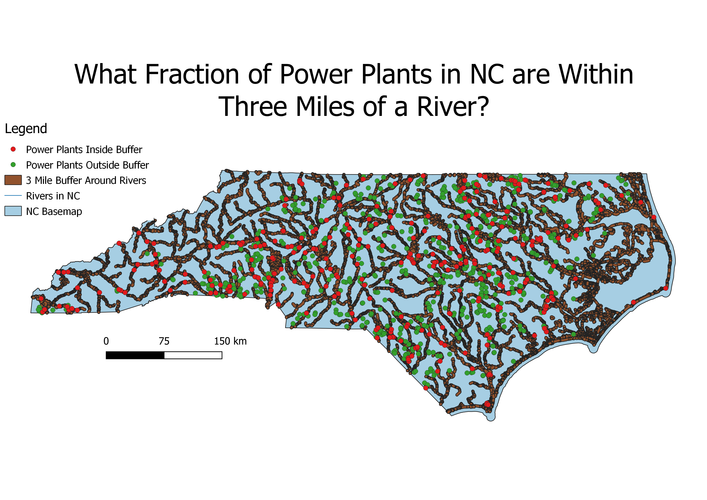

Homework 7: Geoprocessing Analysis
Jason Kennedy

My map addressed the question, "What Fraction of Power Plants in NC are within Three Miles of a River?" Using the buffer and intersect methods, I found that there are 1022 power plants
outside the three mile buffer and 1655 outside the buffer, making the fraction of power plants inside the beffer 1022/2677.
Data used for this project
Power Plant Locations
Major Rivers in NC
Data Source for CSV